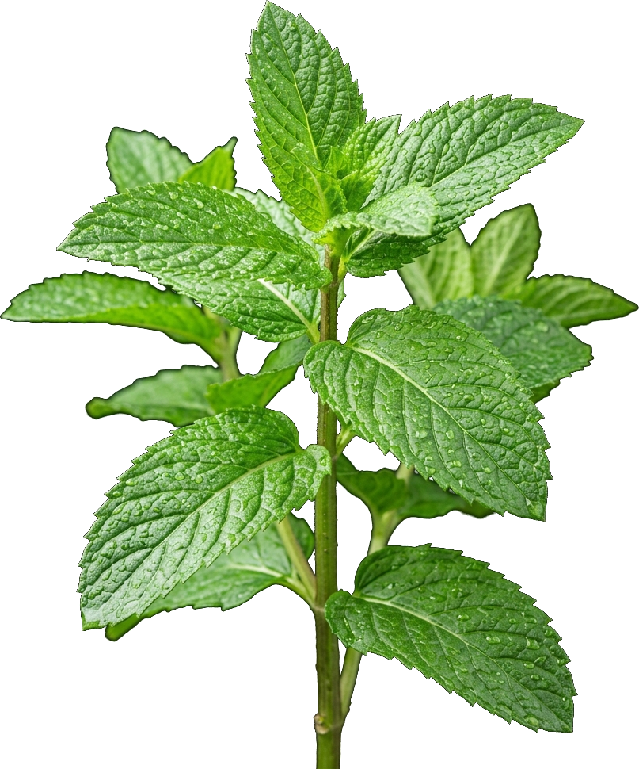

Solusi Alami
Tanpa Emisi.
Bukan sekadar obat tradisional. Ini tentang menghadirkan kesegaran alami di lingkungan sekolah, menyejukkan ruang kelas, dan menumbuhkan budaya hemat energi berkelanjutan.

Eksplorasi Tanaman Obat & Manfaat Herbal
Tanaman herbal bukan hanya obat tradisional alami kaya zat bioaktif, namun juga menjadi solusi ramah lingkungan yang minim proses industri serta menyejukkan pekarangan kita.
Mengapa Tanaman Herbal Mendukung Budaya Hemat Energi?
Program Herbana menghubungkan pelestarian tanaman obat dengan perilaku hemat energi siswa. Keduanya merupakan pilar penting dalam mewujudkan sekolah hijau ramah lingkungan.
Menurunkan Suhu Mikro & Penggunaan Kipas/AC
Rindangnya tanaman herbal di sekitar koridor dan kelas mampu mereduksi panas ruangan hingga 2-3°C, sehingga mengurangi kebutuhan pendingin udara.
Nol Emisi Kimia Industri (Zero Carbon Medicine)
Mengolah obat herbal keluarga tidak membutuhkan mesin bertenaga listrik tinggi maupun rantai pasok kimia pabrik yang rakus energi fosil.
Membentuk Kebiasaan Disiplin Lingkungan Siswa
Siswa yang terbiasa merawat tanaman memiliki kepekaan ekologis lebih tinggi, termasuk kesadaran mematikan lampu dan mencabut steker saat tidak digunakan.
Bukti Keterkaitan Nyata di Sekolah
Data & Fakta: Pemahaman Energi Siswa Kelas XI
Data diambil dari hasil angket kuesioner skala Likert (1-4) yang melibatkan 636 responden siswa kelas XI dari 7 program keahlian.
Sebaran Kategori Perilaku Siswa
Donut ChartPerbandingan Rata-rata Skor per Jurusan
Bar ChartIngin Meneliti Seluruh 10 Indikator & Sebaran Gaya Belajar?
Kunjungi Halaman Khusus “Data & Fakta” untuk visualisasi horizontal bar chart, perbandingan gaya belajar, dan rincian instrumen pertanyaan.